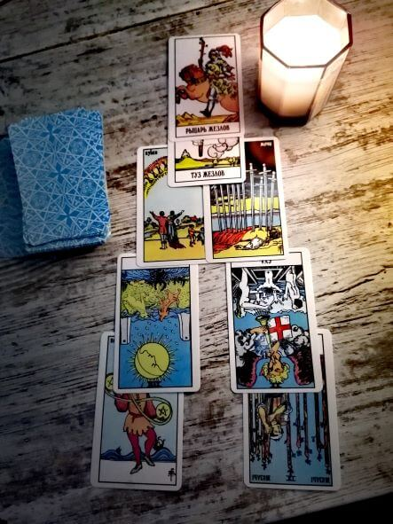
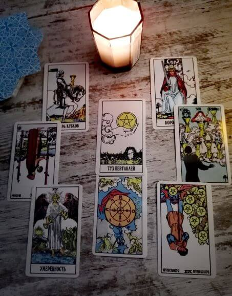
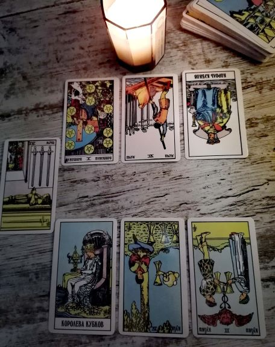
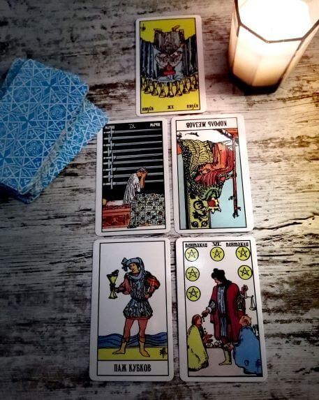
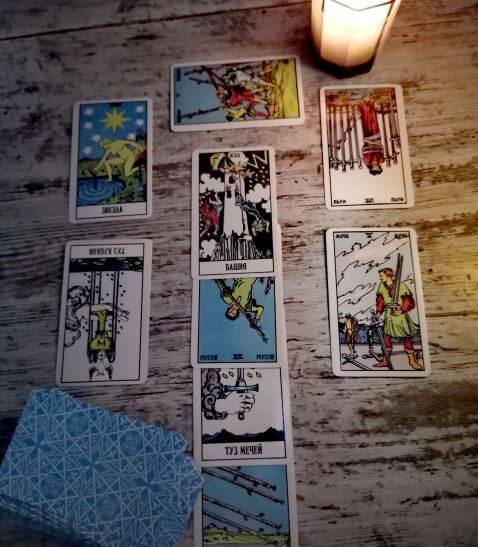
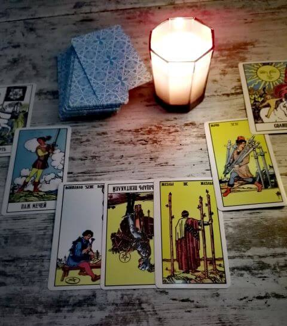
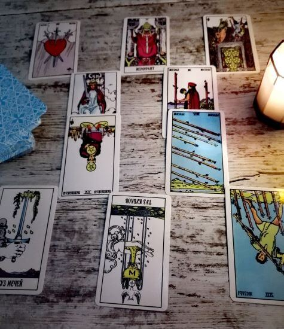
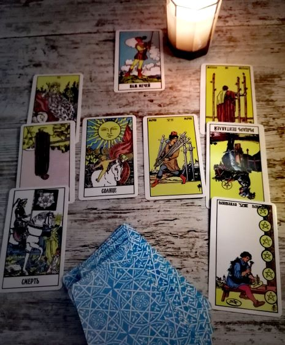
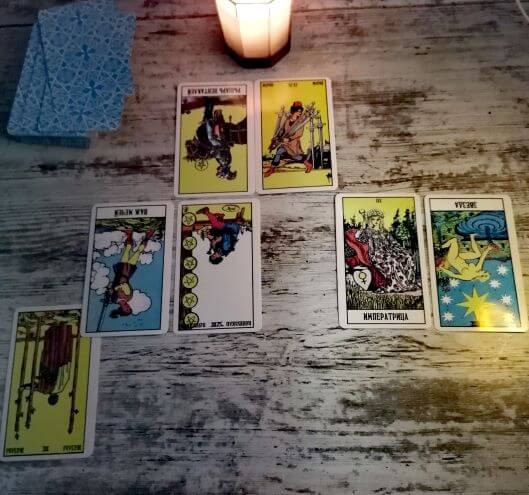
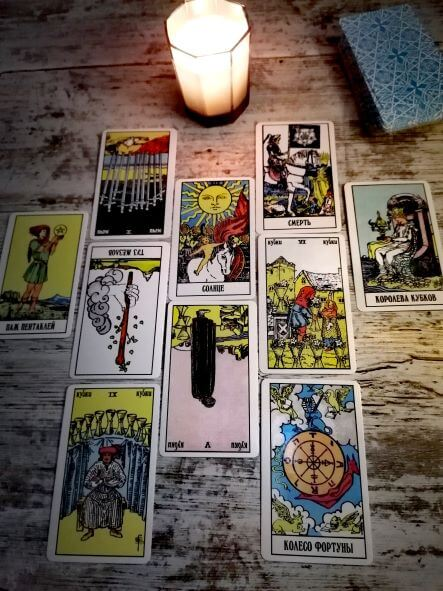

Обо мне
Меня зовут Мария и я такая же, как вы... Я училась в обычной школе, закончила университет и получила диплом историка. Никаких Хогвартсов, никакого зельеварения. Работала ведущим специалистом в банке, заводила семью, покупала квартиру. Всё, как у всех.
Однако, у жизни были немного другие планы на меня. Так сложилось, что я потеряла своих родителей, одного за другим. Уход из жизни каждого из них мне предсказали сны. Справившись с горем и продолжая жить дальше, я начала пытаться разобраться в природе своих видений. Изучение изотерики и духовных практик привело меня к Таро.
Первые расклады робко делала сама себе, своим близким и друзьям. Я не была уверена в своих способностях, но отзывы моих клиентов давали мне силы двигаться дальше. На сегодняшний день я окончательно осознала свое место в этом мире, профессионально занимаюсь раскладами Таро и помогаю каждому, кто обратится ко мне за помощью или советом. Если у вас есть вопрос ко Вселенной или проблема, требующая решения - пишите и мы будем искать выход вместе при помощи Таро.
Мария
Расклады
Рассклады на вопрос - ответ
Гадание на одну карту
 Используется одна карта - ответ на один вопрос.
Используется одна карта - ответ на один вопрос.
Гадание на одну карту
 Используется три карты, вопрос - что делать в ситуации.
Что при этом говорят карты:
Используется три карты, вопрос - что делать в ситуации.
Что при этом говорят карты:
- Как действовать в данной ситуации, какие могут возникнуть препятствия и трудности
- Что делать с полученной информацией
- Чего ни в коем случае нельзя делать с полученной информацией.
Расклады на ситуацию и события
Расклад на неделю
 Используется 7 карт, соответствующие дням недели.
Используется 7 карт, соответствующие дням недели.
Пирамида
 Включает в себя анализ положительных и отрицательных сторон проблемы \вопроса. Используется 8 карт. Карты отвечают на вопросы:
- Текущее положение дел
- Ваше общее состояние - положение и реакция на ситуацию
- Положительные аспекты
- Отрицательные аспекты
- Что повлияет на ситуацию независимо от вас
- На что вы можете повлиять
- Дальнейшее развитие событий
- Итог - что уйдет , что придет, к чему нужно приложить усилия.
Глубина
 Раскрывает подводные камни ситуации. Используется 8 карт. Что говорят карты:
- Что скрытое подавляется человеком
- Что спровоцировало ситуацию
- Как можно было ее избежать
- Что делать, как себя вести
- Скрытые причины ситуации
- Как влияет ситуация на эмоциональное состояние человека
- Как поступит человек
- Отношение человека к полученной здесь информации.
Кельтский крест
 Считается известным универсальным ситуативным раскладом. Можно делать на не только реальную, но и предполагаемую,
воображаемую ситуацию. Карты от 1-6 описывают ситуацию на текущий момент, с 7-10 - показывает вероятное развитие
событий.
Что говорят карты:
Считается известным универсальным ситуативным раскладом. Можно делать на не только реальную, но и предполагаемую,
воображаемую ситуацию. Карты от 1-6 описывают ситуацию на текущий момент, с 7-10 - показывает вероятное развитие
событий.
Что говорят карты:
- Корень проблемы
- Начало ситуации
- База, причина проблемы
- Что ее спровоцировало
- Энергия, управляющая сейчас ситуацией
- Прогноз на будущие (на текущий момент)
- Слабое место
- Объективная оценка
- Сильное место (что помогает в ситуации)
- Итог
Выбор
 В данном раскладе рассматриваются два варианта развития событий, в зависимости от выбора человека в загаданной ситуации. Используется 7 карт: по три на каждый выбор , 7ая карта - причина выбора.
Цель
 Используется, кога есть цель, но не знаете, как ее достичь. 5 карт:
- Kачества, которые нужны для достижения цель
- Kачества, которые нужно контролировать и держать
- Подводные камни и препятствия
- Кто или что может помочь
- Итог.
Анкх
 Так же считается универсальным распространенным гаданием , наряду с Кельстким крестом. Используется 9 карт. Что говорят карты:
- 1 и 2 , суть проблемы, силы , помогающие
- Давняя причина
- Что спровоцировало ситуацию
- Основная энергия, питающая проблему
- Закономерности в проблеме
- Что предпринять , чтобы решить проблему
- Сила, которая может помочь, на которую можно опереться
- Итог.
Гадание на три карты
 Наиболее простое гадание, на три карты? где:
Наиболее простое гадание, на три карты? где:
- Первая карта - прошлое
- Вторая карта - настоящее
- Третья карта - будущее
Подкова
 Расклад делается для трактовки нынешнего положения дел, а так же для просмотра будущего. 7 карт. Отвечает на вопросы:
- Влияние прошлого на наст
- Текущая ситуация
- Развитие событий в дальнейшем
- Как нужно поступить
- Влияние обстоятельств на ситуацию
- Возможные трудности
- Конечный итог.
Расклад на отношения, любовь
Союз
 Расклад делается на любые виды отношений , личнык, деловые, родственные. На 10 карт. Карты отвечают на вопросы:
- Кто вы в этом союзе
- Каким вы видите партнера своего
- Каким вы видите союз
- Что его укрепляет
- Что ослабляет
- Ваши надежды
- Что беспокоит вас
- Ваша задача в этом союзе
- Задача партнера в этом союзе
- Итог союза
Влюбленные
 Этт расклад подходит для тех, кто находится в поиске любви. Используется 9 карт. Карты отвечают на вопросы:
- к каким отношениям направляет вас ваша духовная цель
- какой партнер подходит вам
- как вы можете подготовится к отношениям
- как обрести мир и покой
- пока вы ищите любовь
- чувство игривости и его помощь
- страсть в ваших отношениях
- что прояснить
- как привести божественное в отношения
- какую радость доставляют вам ваши взаимоотношения
Прояснение ситуации
 Если в отношениях что-то не так. На 4 карты. Отвечают на вопросы:
Если в отношениях что-то не так. На 4 карты. Отвечают на вопросы:
- Положение дел
- Что кроется за беспокойством
- Kак к вам относятся
- Cовет таро
Ключ к любви
 На действующие отношения. На 7 карт. Отвечают на вопросы:
На действующие отношения. На 7 карт. Отвечают на вопросы:
- Каковы вы в отношениях
- Что ожидаете от отношений
- Чего боитесь
- Ваша ответственность перед отношениями
- Препятствия, что препятствует любви
- Правильная модель поведения с партнером
- Итог\прогноз.
Обретение любви
 Используется как при новых, начинающихся отношениях, так и при действующих. 9 карт. Ответы:
Используется как при новых, начинающихся отношениях, так и при действующих. 9 карт. Ответы:
- Тот, кто встретится
- Его чувства к вам
- Возможные проблемы
- Место партнера в социуме
- Секс совместимость
- Эмоциональная совместимость
- Что вас может разъединить
- Перспективы в мат плане
- Как можно завоевать парнера.
Расклады на работу и деньги
Как стать богатым
 При помощи этого гадания можно выявить причины финансовых проблем и выбрать путь к новой финансовой ступени.
Используется 5 карт. Карты говорят:
При помощи этого гадания можно выявить причины финансовых проблем и выбрать путь к новой финансовой ступени.
Используется 5 карт. Карты говорят:
- В чем состоит сегодняшняя проблема
- Насколько оправданы ваши расходы
- Возможно ли появление денег в ближайшее время
- Будет ли у вас стабильный доход
- Что нужно изменить в жизни чтобы разбогатеть
Финансовый расклад
 Это расклад на год. Используется 7 карт.
Карты говорят:
Это расклад на год. Используется 7 карт.
Карты говорят:
- Финансовая ситуация сейчас
- Финансы в прошлом
- Есть ли долги и кредиты
- Тенденция в ближайшее будущие, планы
- В чем ваша ошибка в обращении с деньгами
- Как улучшить положение
- Персективы на год
Безработица
 Название говорит само за себя. При гадании необходимо установить временные четкие рамки. Что говорят карты:
Название говорит само за себя. При гадании необходимо установить временные четкие рамки. Что говорят карты:
- Почему вы сейчас без работы
- Что у вас есть для нахождения работы
- Чего у вас не хватает , нет
- Что можете реально сделать
- В какой сфере прежде всего искать место
- Как скоро устроитесь на работу
- Шансы найти работу в загаданное время
Карьера
 Расклад на уже занимаемую вами в настоящий момент должность. Используется 7 карт. Что говорят карты:
- Уровень удовлетворенности работой
- Перспективы
- Фин прогноз на месяц
- Цели ваши
- Опасения и надежды
- Каким будет настрой ваш на год
- Как сложится обстановка
Бизнес
 Расклад на уже существующий ваш бизнес и его перспективы. Показывает, что ждать, как поступить лучше, какая линия развития ожидает. Используется 10 карт.
>Ваше место в жизни
 Подойдет , если вы выбираете путь по жизни, род занятий, профессию, хобби, или просто желаете разобраться в себе
лучше.
Используется 9 карт. Отвечают на вопросы:
Подойдет , если вы выбираете путь по жизни, род занятий, профессию, хобби, или просто желаете разобраться в себе
лучше.
Используется 9 карт. Отвечают на вопросы:
- 1,2,3,4 - что вас сбивает и отвлекает от своего пути
- 5,6,7,8 - что способствует обретению себя
- 9 - где искать предназначение
Психологические расклады
Душевное равновесие
 Поможет разобраться во внутреннем мире человека. 10 карт. Вопросы:
Поможет разобраться во внутреннем мире человека. 10 карт. Вопросы:
- Взаимодействие с окружающими людьми и манера поведения
- Как человек презентует себя миру
- Негативные черты характера
- Восприятие человеком самого себя
- Чему надо научиться
- Самая глубинная суть личности
- Как мир воспринимает человека
- Способность человека поддерживать контакт с другими людьми
- Что нужно сделать для гармонии с людьми
- Что вредит социальным взаимоотношениям.
Темное семя
 Точный расклад. Выявляет главную проблему человека, даже если он сам о ней не знает. 5 карт. Говорят:
Точный расклад. Выявляет главную проблему человека, даже если он сам о ней не знает. 5 карт. Говорят:
- Темное семя внутри, в чем заключается скрытая внутренняя проблема
- Рост семени, до чего может довести , если ничегт не делать
- Причина появления
- Что питает семя
- Как искоренить, бороться
Слепое пятно
 Классический расклад , делается из 11 карт и шута. Место, где оказывается шут - это слепое пятно, главная загадка
человека, его личности, то, в чем не признается даже сам себе.
Карты говорят:
Классический расклад , делается из 11 карт и шута. Место, где оказывается шут - это слепое пятно, главная загадка
человека, его личности, то, в чем не признается даже сам себе.
Карты говорят:
- Адаптация
- Целостность личности
- Милосердие
- Общение
- Творение
- Границы я
- Честность, по отношению к себе
- Любовь
- Доверие к себе
- Истина
- Чем сердце утешается
Вопросы и ответы
Сколько стоит Расклад?
- Стоимость индивидуально и зависит от вида расклада и количества карт, в нем задействованных. В целом, от 300 р
Что нужно для расклада?
- Необходимо чётко сформулировать свой вопрос к Таро, так же отправить тарологу фото и имя человека, на которого производится Расклад. В момент самого заказчику так же желательно думать о своём вопросе.
Когда происходит оплата?
- Оплата происходит после расклада и предоставления ответа таролога.
Нужно куда-то ехать на встречу?
- Нет, я работаю удалённо, связь поддерживаю через мессенджеры.
Проводите ли вы какие - либо ритуалы (приворот, отворот, снячие порчи, чистка)?
- Нет, я занимаюсь только раскладами Таро.
Можно ли гадать на третье лицо?
- Да, можно, но в этом случае требуется фото данного человека и его имя.
Сколько по времени длится Расклад?
- По - разному, от 15-20 минут.